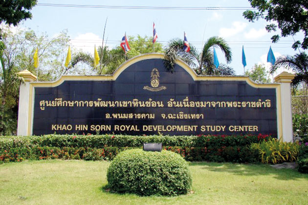

ตั้งอยู่ที่ กม.ที่ 53 ฉะเชิงเทรา-กบินทร์บุรี ริมทางหลวงหมายเลข 304 มีวัตถุประสงค์เพื่อรวบรวม ศึกษา ทดลอง วิจัย และพัฒนาปรับปรุงพื้นที่ทางการเกษตร ซึ่งครั้งหนึ่งพื้นที่เขาหินซ้อนเป็นพื้นที่ป่าที่มีความอุดมสมบูรณ์ผืนหนึ่งของภาคตะวันออก แต่ด้วยการทำการเกษตรที่ผิดวิธี การบุกรุกพื้นที่เพื่อใช้เป็นที่ทำกิน จากเดิมที่เป็นพื้นที่อุดมสมบูรณ์ ก็กลายเป็นพื้นที่ทะเลทรายที่ไม่สามารถทำมาหากินได้
จนเมื่อพระบาทสมเด็จพระปรมินทรมหาภูมิพลอดุลยเดช ได้พระราชทานพระราชดำริให้ทำการฟื้นฟูสภาพของดิน เพื่อให้เกษตรกรสามารถนำไปใช้ในการ ประกอบอาชีพได้อย่างยั่งยืน
